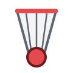

Hello Guys
Hi, I'm Bugs, a 1st year BS Computer Science student who treats every error as a puzzle waiting to be solved and loves coding even when the errors make me want to pull my hair out. :<
About me
I love playing basketball and badminton, and when I’m not on the court you’ll find me gaming or watching videos. Coding is my kind of challenge. Debugging can be frustrating, but nothing beats the feeling of finally fixing an error.
Things I enjoy
- Playing basketball
- Playing badminton
- Playing online/offline games
My path into computing
I chose Computer Science because I love technology and the world of cybersecurity. In my free time, I enjoy playing video games and watching videos, which made me curious about how software works and what the cybersecurity fundamentals are. Now, I love coding because it feels like solving a big puzzle. Even when I get hard errors that make me frustrated, I feel so happy and proud when I finally fix them.
Every error is just a puzzle waiting to be solved.
Favorites or skills
| Category | My pick | Why I like it |
|---|---|---|
Discord |
SAMP community | That is where I met a lot of people in a game called SAMP, where I enjoyed roleplaying and face-to-face combat shooting. |
TikTok |
Interacting and entertainment | If I get bored, I watch TikTok videos or go live to talk to people and improve my communication skills. |
Mobile Legends Bang Bang |
My old comfort zone | Day and night are completely different there, because me and my troops play all day just to win ranked games. Sometimes when our egos get high, we play friendly 1v1 or 5v5 just to prove who is stronger and who carries all the games. |
Skill I'm building |
Critical Thinking, Decision Making, Time Management | I practice by analyzing problems carefully and organizing my time before making a choice, whether I am playing games, playing sports, going to school, or solving real-life problems. |
Goals
In the next few years, I hope to finish my Computer Science degree and build a strong foundation in networking and data protection. My ultimate goal is to become a skilled cybersecurity professional who can protect systems and fight against real-world digital threats.
Reflection
While making this page, I learned that web design takes a lot of patience when linking index.html and style.css. Fixing layout errors felt like solving a puzzle, which is great practice for my goal in cybersecurity. Compared to my first activity, I improved at organizing my code to make it look much cleaner.
Fun fact about me (click to open)
I am studying computer science to become a cybersecurity professional, but I still spend my free time getting beaten by difficult video game bosses.
Sticker board
Stickers for the things I love: bugs, games, sports, security, and the terminal.
- Debugging
- Gaming
- Basketball
- Badminton
- Cybersecurity
- Coding